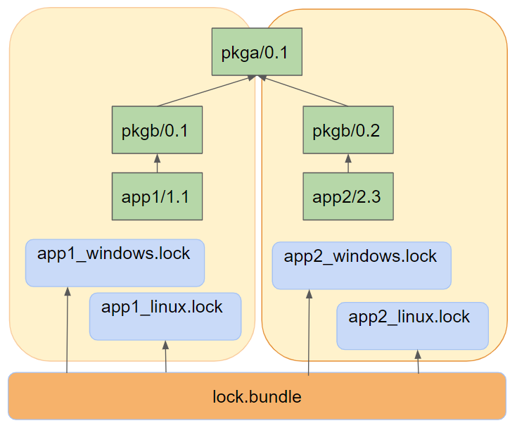

Lockfile bundles
Warning
This is an experimental feature subject to breaking changes in future releases.
Every package build using lockfiles requires a given configuration-specific lockfile, and after the build, that lockfile is updated to include the built package revision. If we have different configurations for different variants as different architectures, compiler versions or Debug/Release, a build will be typically necessary for each one.
In real life, it is also likely that we might want to build together different applications or products, that could be even disconnected, and we want to do it as efficiently and fast (in parallel) as possible. We could have the following situation:
{kind=link}
In this diagram we see that we are building and releasing 2 different products in our team: app1/1.1 and
app2/2.3. app1 depends on pkgb/0.1 (omitting user/channel for brevity, but please use it) and
app2 depends on pkgb/0.2. In turn, both versions of pkgb depend on the same pkga/0.1 version.
If we are building both products for 2 different configurations each (lets say Windows and Linux), we could capture 4 different lockfiles:
$ conan lock create --ref=app1/1.1 --base --lockfile-out=app1_base.lock
$ conan lock create --ref=app2/2.3 --base --lockfile-out=app2_base.lock
$ conan lock create --ref=app1/1.1 -s os=Windows --lockfile=app1_base.lock --lockfile-out=app1_windows.lock
$ conan lock create --ref=app1/1.1 -s os=Linux --lockfile=app1_base.lock --lockfile-out=app1_linux.lock
$ conan lock create --ref=app2/2.3 -s os=Windows --lockfile=app2_base.lock --lockfile-out=app2_windows.lock
$ conan lock create --ref=app2/2.3 -s os=Linux --lockfile=app2_base.lock --lockfile-out=app2_linux.lock
If we launched these 4 lockfiles builds in parallel, we can see that pkga/0.1 will be built 4 times, 2 times
in Windows and 2 times in Linux. The extra build in each OS is redundant and can be avoided. But we need a way
to orchestrate it, that is what a lockfile bundle is for.
Creating a lockfile bundle
Creating a lockfile bundle can be done with the conan lock bundle create command, passing the list of all lockfiles
for all configurations and products, and obtaining one single output bundle:
$ conan lock bundle create app1_windows.lock app1_linux.lock app2_windows.lock app2_linux.lock --bundle-out=lock.bundle
Inspecting the resulting lockfile bundle file, we can see it is a json file with the following structure:
"lock_bundle": {
"app1/1.1@#584778f98ba1d0eb7c80a5ae1fe12fe2": {
"packages": [{
"package_id": "3bcd6800847f779e0883ee91b411aad9ddd8e83c" ,
"lockfiles": {
"app1_windows.lock": [
"1"
]
},
"prev": null,
"modified": null
}, {
"package_id": "60fbb0a22359b4888f7ecad69bcdfcd6e70e2784",
"lockfiles": {
"app1_linux.lock": [
"1"
]
},
"prev": null,
"modified": null
}
],
"requires": [
"pkgb/0.1@#cd8f22d6f264f65398d8c534046e8e20"
]
}
}
The bundle groups items per “recipe reference”, included the recipe revision, like app1/1.1@#584778f98ba1d0eb7c80a5ae1fe12fe2.
For each one, it will list all different binaries, identified by their package_id that are involved in the different
lockfiles, listing all lockfiles for each package_id. In this case, as app1 only belongs to app1 lockfiles, only
one lockfile app1_windows.lock, app1_linux.lock is in each package_id. Also, the package revision prev is listed,
in this case being null, because there is no locked binary in the lockfiles, but is going to be built.
Note
The relative path between the bundle file and the lockfile files need to be maintained. In the example
app1_linux.lock means that the lockfile is located in the same folder as the bundle file itself. If
moving the bundle to a different machine, the lockfiles should be moved too, maintaining the same relative
layout.
The interesting part is in the pkga/0.1 information in the bundle:
"pkga/0.1@#f096d7d54098b7ad7012f9435d9c33f3": {
"packages": [{
"package_id": "3475bd55b91ae904ac96fde0f106a136ab951a5e",
"lockfiles": {
"app1_windows.lock": [
"3"
],
"app2_windows.lock": [
"3"
]
},
"prev": null,
"modified": null
}
]
}
Now we can see that for one package_id there are actually 2 different lockfiles that require it. Both app1 and app2
depend in this case on pkga/0.1.
This is the information that can be used to avoid duplicated builds.
Using a lockfile bundle to build
The lockfile bundles also can compute a “build order” over the bundle, that will give an ordered list of lists of the package references that need to be built. In our case we could do:
$ conan lock bundle build-order lock.bundle --json=build_order.json
[
["pkga/0.1@#f096d7d54098b7ad7012f9435d9c33f3"],
["pkgb/0.1@#cd8f22d6f264f65398d8c534046e8e20", "pkgb/0.2@#cd8f22d6f264f65398d8c534046e8e20"],
["app1/0.1@#584778f98ba1d0eb7c80a5ae1fe12fe2", "app2/0.1@#3850895c1eac8223c43c71d525348019"]
]
The result is a list of lists. Every inner list is a “level”, it is formed by mutually independent references that can be built in parallel, because they don’t depend on each other. But every level will have dependencies to the previous levels, so it is necessary to build those levels in order.
The build order list can be iterated, building the packages in order. The necessary information is in the bundle file itself, so we can read it and use it, something like:
# Get the build order
build_order = json.loads(open("build_order.json").read())
# Read the bundle
bundle = json.loads(open("lock.bundle").read())
bundle = bundle["lock_bundle"]
for level in build_order: # iterate the build_order
for ref in level: # All refs in this level could be built in parallel
# Now get the package_ids and lockfile information
package_ids = bundle[ref]["package_id"]
for pkg_id, info in package_ids.items():
lockfiles = info["lockfiles"]
lockfile = next(iter(sorted(lockfiles))) # Get the first one, all should be valid to build same packag_id
os.system("conan install {ref} --build={ref} --lockfile={lockfile} "
"--lockfile-out={lockfile}".format(ref=ref, lockfile=lockfile))
os.system("conan lock bundle update lock.bundle")
This works under the hypothesis that the same binary, identified by the same package_id will be obtained irrespective
of which lockfile or final product is used to build it. If this doesn’t hold true, then the package_id policies should
be revised until this condition is met.
Important
Recall that this is an orchestration mechanism, that can be used to distribute the actual conan install tasks
to different agents, based on the lockfile itself, we might need some logic to send that build to one or another
build server. If we didn’t want to orchestrate and everything can be built in this machine a
conan install app1/1.1@ --lockfile={lockfile} --build=missing would build all the necessary dependencies in the
graph, in the current agent.
Note that the builds themselves are using regular lockfiles. The bundle does not contain the necessary information to reproduce the dependency graph that is needed to create packages.
The command conan lock bundle update lock.bundle manages to update all the connected lockfiles after a reference has been
built. When the build is fired, it is done using 1 of the lockfiles, for a given configuration. That lockfile will get the
updated package revision and status. The conan lock bundle update does this process in 2 steps:
Scan all connected lockfiles for every
refrecipe reference andpackage_id, and collect those that have been modified.Propagate the modified information to all the other connected lockfiles.
After conan lock bundle update, all packages sharing the same reference and package_id should
have the same status (marked “modified” and same package revision). The “modified” state for the
lockfile bundles can be cleaned using the command conan lock bundle clean-modified that will
clean that flag from both the .bundle file and the individual .lock files.